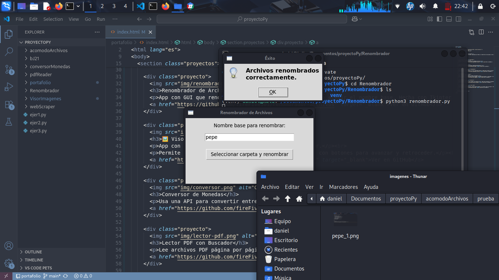
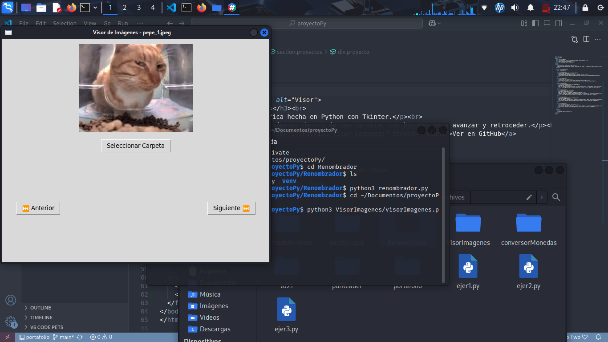
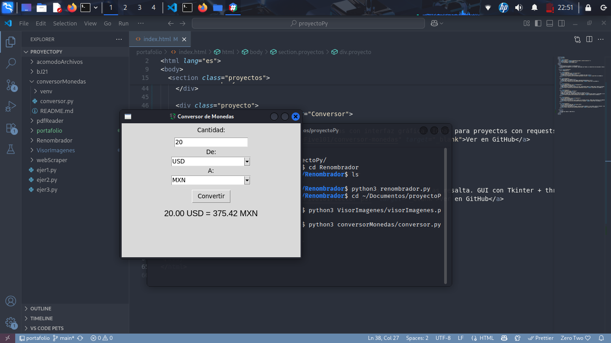
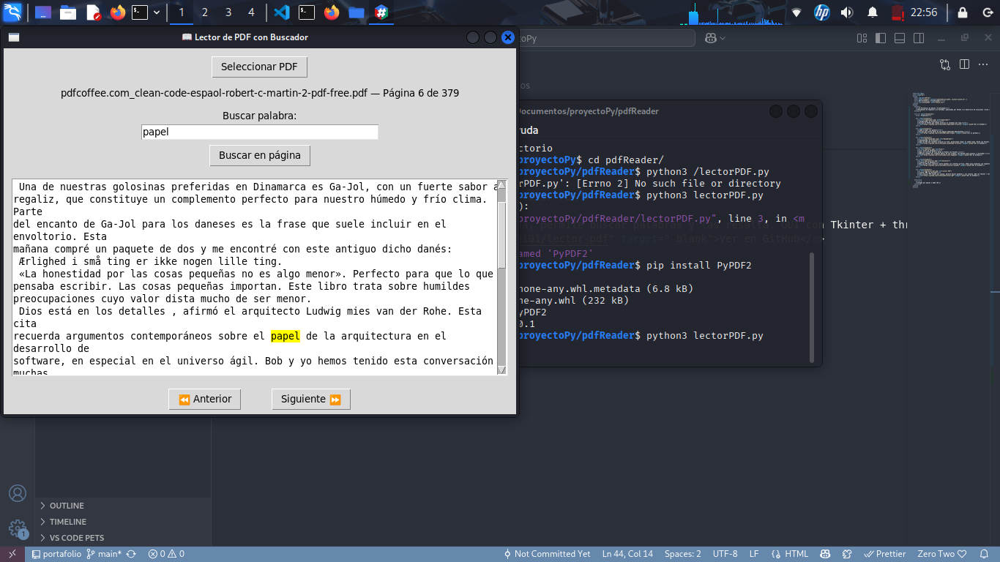

🚀 Proyectos


Renombrador de Archivos
App con GUI que renombra archivos en lote, permitiendo elegir el nombre base. Hecha con Tkinter.
Ver en GitHub

Ver en GitHub
🖼️ Visor de Imágenes
App con interfaz gráfica hecha en Python con Tkinter.
Permite navegar por imágenes dentro de una carpeta, con botones para avanzar y retroceder.
Ver en GitHub

Conversor de Monedas
Usa una API para convertir entre monedas con interfaz gráfica. Ideal para proyectos con requests + Tkinter.
Ver en GitHub

Lector PDF con Buscador
Lee archivos PDF página por página, permite buscar palabras y las resalta. GUI con Tkinter + threading.
Ver en GitHub